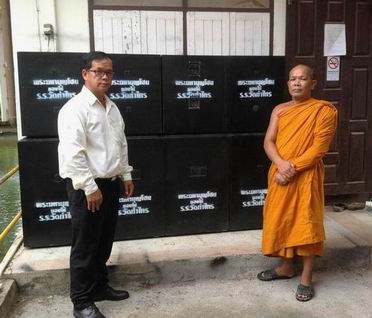
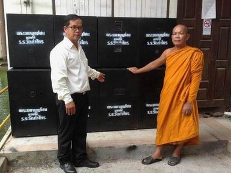
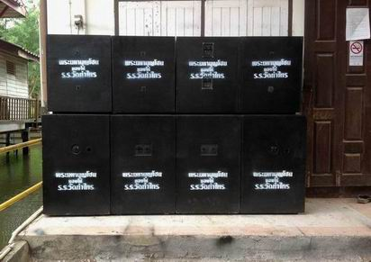
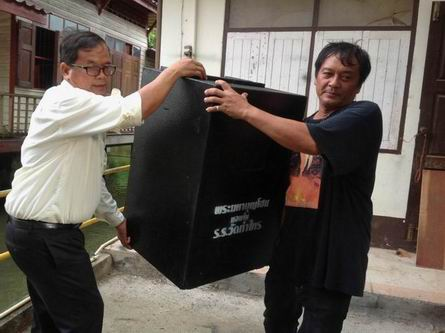
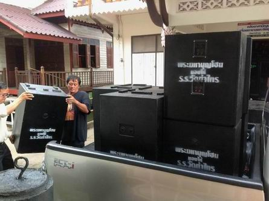
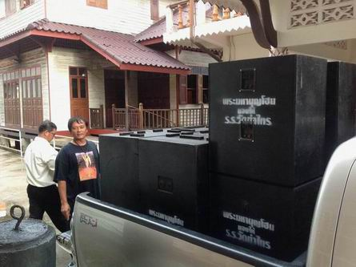
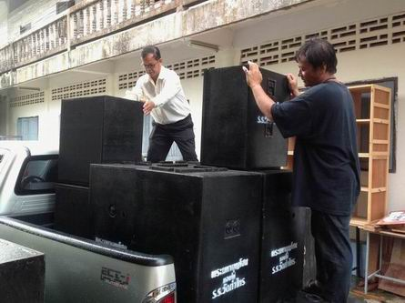
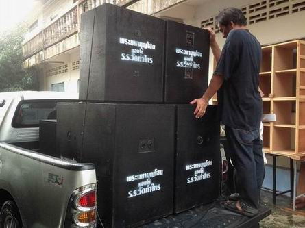

|
ก่อนหน้านี้
นายบุญจันทร์ รุ่งฟ้า รองผู้อำนวยการและบุคลากรอีกท่านหนึ่งของโรงเรียนวัดท่าไทร
ได้แวะมาคุยปรึกษาหารือเกี่ยวกับการที่จะพัฒนาระบบเสียงเพื่อใช้ในกิจกรรมต่าง
ๆ ของโรงเรียน (ซึ่งเมื่อประมาณเกือบยี่สิบปีที่แล้ว แอดมิน(พระมหาบุญโฮม)ได้เคยช่วยทำระบบเสียงให้แก่โรงเรียนและช่วยสอนธรรมศึกษาแก่นักเรียนโรงเรียนเรียนวัดท่าไทร
ตั้งแต่ปี 2531-2549, เคยเป็นกรรมการสถานศึกษาโรงเรียนวัดท่าไทรอยู่หลายสมัย/วาระ
และแอดมินเมื่อครั้งเป็นผู้ดำเนินการศูนย์ฝึกอบรมพิมพ์ดีดและคอมพิวเตอร์วัดท่าไทร
ได้ร่วมกับโรงเรียนวัดท่าไทรจัดให้มีการฝึกอบรมคอมพิวเตอร์ "หลักสูตรคอมพิวเตอร์สำหรับครูและบุคลากรในสถานศึกษา"
แก่ครูและบุคลากรโรงเรียนวัดท่าไทร ให้สามารถใช้คอมพิวเตอร์เป็นและใช้คอมพิวเตอร์ได้อย่างมีประสิทธิภาพ
ทุกครั้งที่แอดมินสร้างตู้ลำโพงใหม่ขึ้นมาใช้ในงานบุญกุศลของวัด(ฟรี)
ด้วยเงินส่วนตัวแทนของเดิมที่มีอยู่แล้ว ก็จะบริจาคตู้ลำโพง/ดอกลำโพง
ฯลฯ ของเดิมนั้น ให้แก่วัดต่าง ๆ อยู่เป็นประจำ (แต่ไม่เคยนำลงเฟชให้ได้รับทราบกัน)
ซึ่งหากประเมิน/คิดเป็นเงินแล้ว ก็เป็นจำนวนที่มิใช่น้อย
ดังนั้น
ในวันที่ 6 กรกฎาคม 2558 พระมหาบุญโฮม จึงได้มอบตู้ลำโพงเปล่า
จำนวน 8 ตู้ (ตู้เบส สูตร jbin-15 จำนวน 4 ตู้, และตู้เสียงกลาง-แหลม
(ใส่เสียงกลาง 15 นิ้ว, แหลม P-888) จำนวน 4 ตู้) สนับสนุนโรงเรียนวัดท่าไทร(ดิตถานุเคราะห์)เพื่อใช้ในงานกิจกรรมต่าง
ๆ ของโรงเรียน โดยมี นายบุญจันทร์ รุ่งฟ้า รองผู้อำนวยการ และนายสมบัติ
นักการฯ เป็นผู้รับมอบ ....(แต่ครั้งนี้เป็นครั้งแรกที่มอบให้แก่สถานศึกษาใกล้วัดเพื่อใช้ในงานกิจกรรมต่าง
ๆ ของโรงเรียน และเป็นครั้งแรกที่นำลงเฟช เพื่อให้ศิษย์เก่าและศิษย์ปัจจุบันของโรงเรียนฯ
ได้รับทราบและร่วมสนับสนุนโรงเรียนของตัวเองต่อไป) จึงนำภาพมาให้ชมและอนุโมทนาบุญด้วยกันครับ
---------------
ข้อมูลเพิ่มเติมที่เราชาวพุทธควรตระหนักรู้
ระบบเสียงในวัด
เป็นสิ่งที่จำเป็นมาก เพราะต่อให้พระนักเทศน์ จะมีความรู้ ความเข้าใจ
ทักษะในการเทศน์ถ่ายทอดธรรมะ ทัศนคติที่ดีต่อการเผยแผ่ธรรมะ และมีความประพฤติดีปฏิบัติชอบสักเพียงใด
สาระจะมากสักเพียงไหน หรือแม้แต่จะเทศน์เก่งสักเพียงใด แต่หากระบบเสียงไม่ดี
ผู้ฟังไม่ได้ยินหรือได้ยินไม่ชัด การเทศน์ การเผยแผ่พระพุทธศาสนาก็ไม่ประสบผลสำเร็จ
และการประชาสัมพันธ์ก็ไม่ประสบผลสำเร็จ ง่านก็เสีย ภารกิจก็เสีย
และหากไม่สร้างไว้ เมื่อมีงานบุญกุศลในวัด (โดยเฉลี่ยเดือนละ ๓
งานเป็นอย่างน้อย) จะต้องเช่าจากผู้ที่ให้บริการ ซึ่งนอกจะต้องเสียเงินจำนวนมากแล้ว
เวลาเปิดใช้งานก็ไม่สะดวก มิหนำซ้ำ "เครื่องเสียงที่นำมาบริการก็จะเปิดเพลงตามสไตล์ชาวบ้าน
บางครั้ง(ส่วนมาก) จะเปิดเพลงที่ขัดต่อศีลธรรม ยั่วยุกามารมณ์
และขัดต่อสภาพของวัด "
ดังนั้น
พระมหาบุญโฮม ปริปุณฺณสีโล จึงจัดสร้างระบบเสียงเพื่อใช้ในงานบุญกุศลและกิจการคณะสงฆ์
(ฟรี) ด้วยเงินส่วนตัวของแอดมินเอง เพื่อให้เกิดบุญกุศลอย่างเดียว
แอดมินรับบุญเต็ม ๆ หากมีวัสดุอุปกรณ์ใดขัดข้อง เสียหาย แอดมินก็รับผิดชอบค่าใช้จ่ายเอง
วัดและคณะสงฆ์ไม่ต้องแบกรับภาระใด ๆ
ตลอดระยะเวลา ๒๖ ปีเศษที่ผ่านมา ที่แอดมิน (พระมหาบุญโฮม)
มาอยู่ที่วัดท่าไทร ได้สร้างตู้ลำโพงและระบบเสียงสำหรับใช้ในงานบุญและศาสนกิจภายในวัด(ฟรี)
เท่านั้น โดยสร้างจำนวน ๔ ครั้งใหญ่ ในการสร้าง ๓ ครั้งแรกตีตรา
"วัดท่าไทรซาวด์" แต่อะไร ๆ ก็ตามที่ขึ้นชื่อว่า "ของวัด"
มักจะมี "ผู้สู่รู้ มากความคิด เก่งแต่ปาก แต่ไม่เคยสร้างสรรค์อะไรที่ดีแก่ส่วนรวม"
ชอบเข้าไปยุ่งเกี่ยวเสมอ ไม่นานสิ่งของก็พังเสียหายแล้วไม่เคยมีใครแสดงความรับผิดชอบ
สุดท้ายแอดมินจึงตัดสินใจสร้างขึ้นเป็นครั้งที่ ๔ แล้วตีตรา "พระมหาบุญโฮม"
เมื่อ ๑๑ ปี เศษที่ผ่านมา ซึ่งรอบนี้ใช้ได้นานที่สุด มีคุณภาพเสียงที่ดีที่สุดกว่าทุกครั้ง
และใช้เงินเพื่อการนี้มากที่สุดกว่าทุกครั้ง แต่ก็รำคาญปากหอยปากปูที่ไม่เคยช่วยเหลืออะไรในเลย
การสร้างระบบเสียงนี้ มิใช่เพราะชอบ แต่เพราะความจำเป็นต่อการใช้งาน
พอเหมาะ พอควร เข้ากับบริบทของวัด เพื่อให้ศาสนกิจเป็นไปได้ด้วยดี
มีประสิทธิภาพในการปฏิบัติงาน เพื่อให้เหมาะสมและทันต่อเวลา ประหยัดและคุ้มค่าใช้จ่าย
มีคุณภาพ และความพึงพอใจต่อพุทธศาสนิกชนผู้มาร่วมงาน ครับ
ทุกครั้งที่ พระมหาบุญโฮม ปริปุณฺณสีโล ได้สร้างตู้ลำโพงใหม่ขึ้นมาใช้ในงานบุญกุศลของวัด(ฟรี)ด้วยเงินส่วนตัวแทนของเดิมที่มีอยู่แล้ว
ก็จะบริจาคตู้ลำโพง/ดอกลำโพง ฯลฯ ของเดิมนั้น ให้แก่วัดต่าง ๆ
อยู่เป็นประจำ ซึ่งหากประเมิน/คิดเป็นเงินแล้ว ก็เป็นจำนวนที่มิใช่น้อย
|

|
|

|
|
นายบุญจันทร์
รุ่งฟ้า และ พระมหาบุญโฮม ถ่ายคู่กับตู้ลำโพงที่จะมอบให้โรงเรียน
|
|
นายบุญจันทร์
รุ่งฟ้า และ พระมหาบุญโฮม มอบให้โรงเรียน
|
|

|
|

|
|
ตู้ลำโพง
ซับเบส สูตรJ-bin 15", ตู้กลางแหลม (่เสียงกลาง15นิ้ว,แหลม
P-888)
|
|
นายบุญจันทร์
รุ่งฟ้า และ นายสมบัติ กำลังช่วยกันหามตู้ลำโพงขึ้นรถ
|
|

|
|

|
|
กำลังทะยอยตู้ลำโพง
8 ตู้ ขึ้นรถปิกอัพ ตอนครึ่ง
|
|
ตู้ลำโพงที่มอบให้
สามารถใช้งานเล่นดนตรี 1 วง ได้อย่างสบายครับ
|
|

|
|

|
|
ตู้ลำโพงทั้งหมด
ใส่รถปิกอัพ ตอนครึ่ง 1 คัน หมดในเที่ยวเดียว
|
|
จัดการมัดให้แน่น
เพื่อป้องกันการเกิดอุบัติเหตุในการเคลื่อนย้าย
|

กลับไปหน้า
Web วัดท่าไทร
ไป Web สำนักงานเจ้าคณะภาค
๑๖
ไป
Web ศูนย์พัฒนาคุณธรรมภาคใต้
ไป
Web วิทยุชุมชนตำบลท่าทองใหม่
ไป Web ชมรมวีอาร์ร้อยเกาะสุราษฎร์ธานี
|